Encuentro Nacional de Laicos «Unidos en la Misión 2026»
Tres días en Caracas, del 13 al 15 de noviembre, para que laicos de varias diócesis y movimientos escucharan, discernieran y trabajaran juntos sobre su vocación y su corresponsabilidad en la misión.
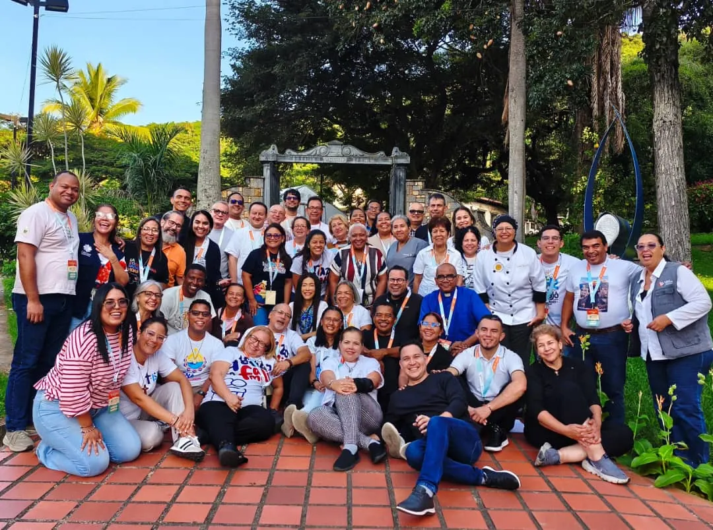
Datos del evento
- Fecha
- Del 13 al 15 de noviembre de 2026
- Modalidad y lugar
- Presencial · Casa Monseñor Ibarra, sede de la CEV, Montalbán, Caracas
- Organiza
- Centro de Laicos, Familia y Juventud, del SPEV de la Conferencia Episcopal Venezolana, e Instituto Nacional de Pastoral (INPAS)
- Estado
- Realizado
Cómo fue
El viernes 13 la directora del Centro, Saritza Roque, instaló el encuentro en la Casa Monseñor Ibarra, sede de la CEV. Un obispo asistió a la apertura. El director del INPAS, diácono, habló de los frutos de fe, esperanza y caridad. Una religiosa, a quien la nota llama «madre sinodal», dio la ponencia sobre la «Conversación en el Espíritu».
El sábado 14 un profesor y filósofo laico habló de la unidad como una sinfonía donde las diferencias suman. Un obispo auxiliar de San Cristóbal expuso sobre el papel de los laicos. Se presentó «Clave», una propuesta de plataforma digital y narrativa transmedia para evangelizar. Por la tarde, la organización Trabajo y Persona guió una dinámica de elaboración de chocolate con cacao criollo, para pensar en lo que se comparte.
El domingo 15 los participantes definieron las líneas pastorales prioritarias: esperanza, reconciliación y acompañamiento espiritual.
Cita bíblica: Mt 25,14-15.
Qué se hizo
- Instalaron el encuentro con la bienvenida de la directora del Centro.
- Escucharon la ponencia sobre «Conversación en el Espíritu» (viernes 13).
- Escucharon la ponencia «Unidos en la misión» y la exposición de un obispo sobre el laicado (sábado 14).
- Conocieron «Clave», una plataforma digital de evangelización (sábado 14).
- Elaboraron chocolate con cacao criollo, en una dinámica con Trabajo y Persona (sábado 14).
- Definieron las líneas pastorales prioritarias (domingo 15).
Quién participó
- Saritza Roque, directora del Centro de Laicos, Familia y Juventud.
- Jannet de Rivas y Pedro Rivas, coordinadores del Área de Familia.
- Génesis Martínez, coordinadora del Área de Juventud.
- El director del Instituto Nacional de Pastoral (INPAS), diácono.
- Un obispo, que asistió a la apertura y expuso sobre el laicado.
- Una religiosa, que dio la ponencia sobre Conversación en el Espíritu.
- Integrantes del equipo de formación y vinculación con asociaciones del Centro.
Cifras
- Dos participantes por instancia pastoral, según la convocatoria de la CEV del 9 de octubre de 2026.
Galería
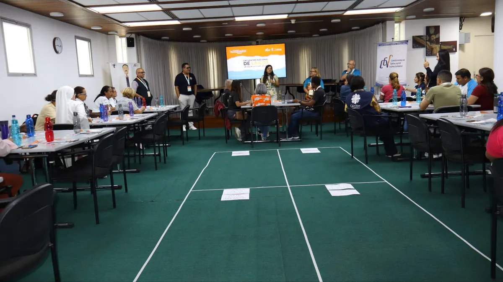
Encuentro Nacional de Laicos «Unidos en la Misión 2026», Casa Monseñor Ibarra, sede de la CEV, Montalbán, Caracas, del 13 al 15 de noviembre de 2026. Vista general del salón en forma de U con mesas y pantalla, antes de comenzar una sesión. Crédito: CEV Medios, fuente: CEV. 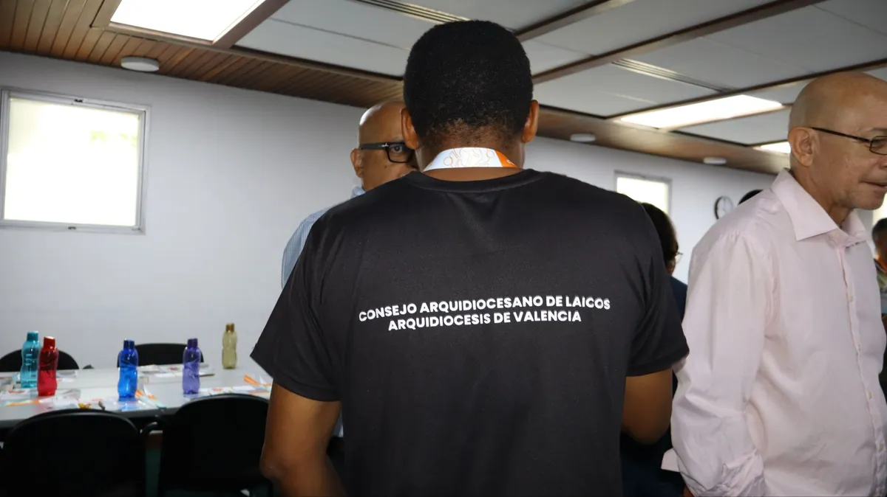
Encuentro Nacional de Laicos «Unidos en la Misión 2026», Casa Monseñor Ibarra, sede de la CEV, Montalbán, Caracas, del 13 al 15 de noviembre de 2026. Un participante de espaldas conversa con otro asistente. Crédito: CEV Medios, fuente: CEV. 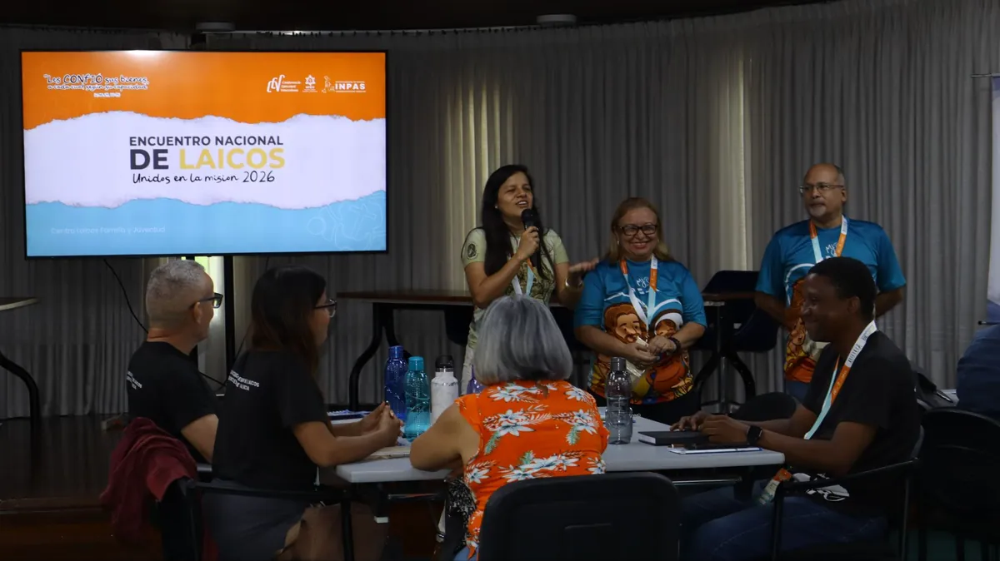
Encuentro Nacional de Laicos «Unidos en la Misión 2026», Casa Monseñor Ibarra, sede de la CEV, Montalbán, Caracas, del 13 al 15 de noviembre de 2026. Mesa principal con la pantalla «Encuentro Nacional de Laicos, Unidos en la misión 2026» y una mujer con micrófono. Crédito: CEV Medios, fuente: CEV. 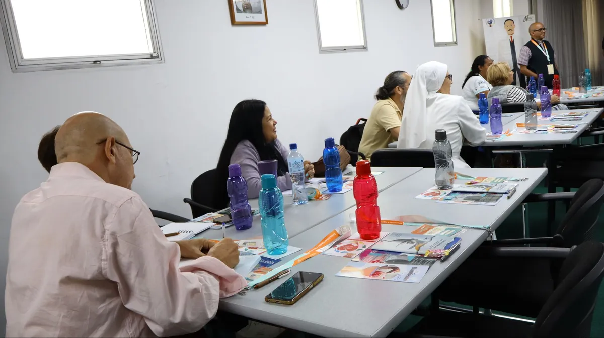
Encuentro Nacional de Laicos «Unidos en la Misión 2026», Casa Monseñor Ibarra, sede de la CEV, Montalbán, Caracas, del 13 al 15 de noviembre de 2026. Participantes sentados en mesas de trabajo con materiales del encuentro. Crédito: CEV Medios, fuente: CEV. 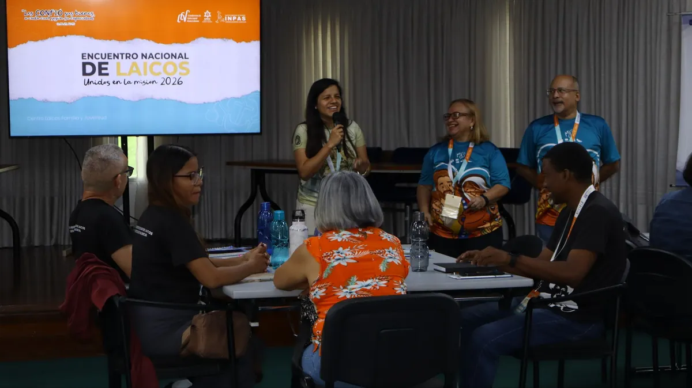
Encuentro Nacional de Laicos «Unidos en la Misión 2026», Casa Monseñor Ibarra, sede de la CEV, Montalbán, Caracas, del 13 al 15 de noviembre de 2026. Mesa principal bajo la pantalla del encuentro, con una mujer que habla al público. Crédito: CEV Medios, fuente: CEV. 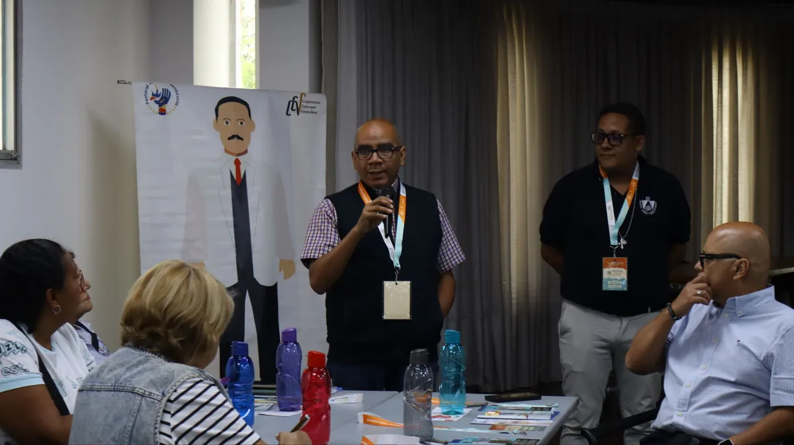
Encuentro Nacional de Laicos «Unidos en la Misión 2026», Casa Monseñor Ibarra, sede de la CEV, Montalbán, Caracas, del 13 al 15 de noviembre de 2026. Un asistente interviene con micrófono junto a un cartel, mientras otros escuchan. Crédito: CEV Medios, fuente: CEV. 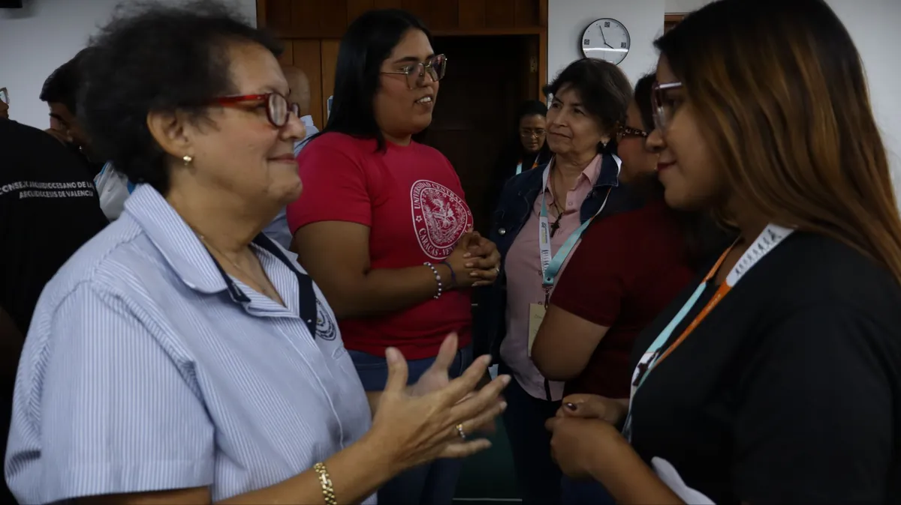
Encuentro Nacional de Laicos «Unidos en la Misión 2026», Casa Monseñor Ibarra, sede de la CEV, Montalbán, Caracas, del 13 al 15 de noviembre de 2026. Cuatro mujeres conversan en el salón durante un descanso. Crédito: CEV Medios, fuente: CEV. 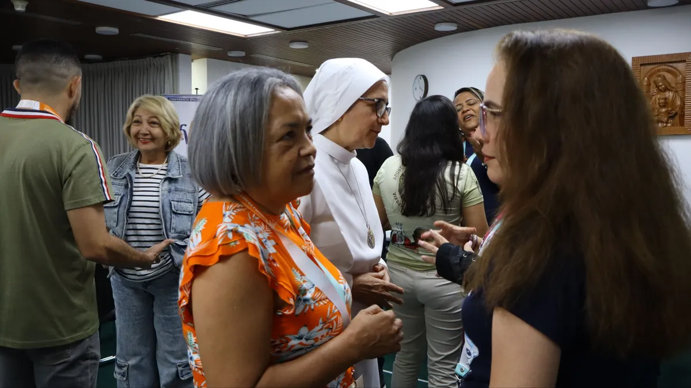
Encuentro Nacional de Laicos «Unidos en la Misión 2026», Casa Monseñor Ibarra, sede de la CEV, Montalbán, Caracas, del 13 al 15 de noviembre de 2026. Participantes y una religiosa conversan de pie. Crédito: CEV Medios, fuente: CEV. 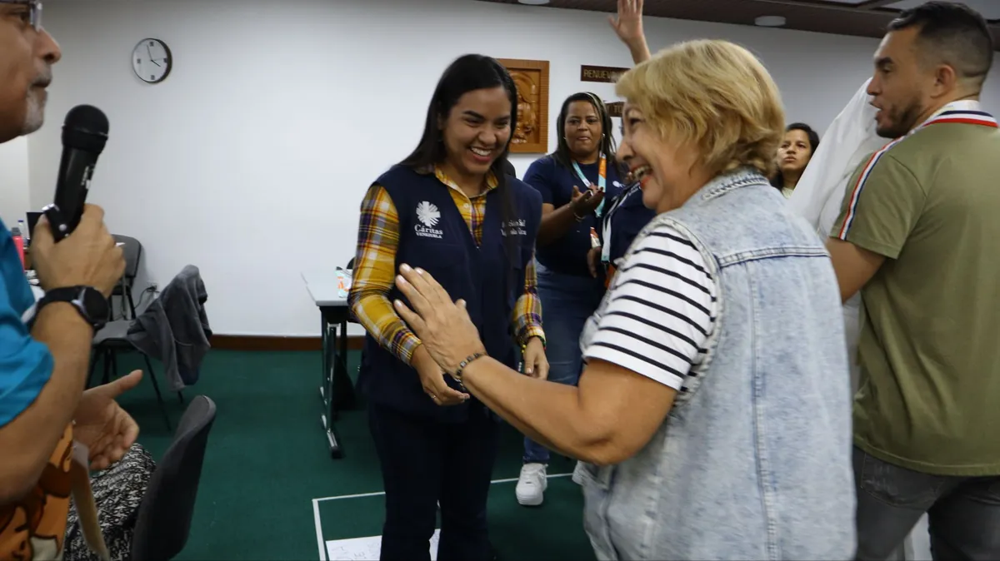
Encuentro Nacional de Laicos «Unidos en la Misión 2026», Casa Monseñor Ibarra, sede de la CEV, Montalbán, Caracas, del 13 al 15 de noviembre de 2026. Una mujer con micrófono conversa con una participante. Crédito: CEV Medios, fuente: CEV. 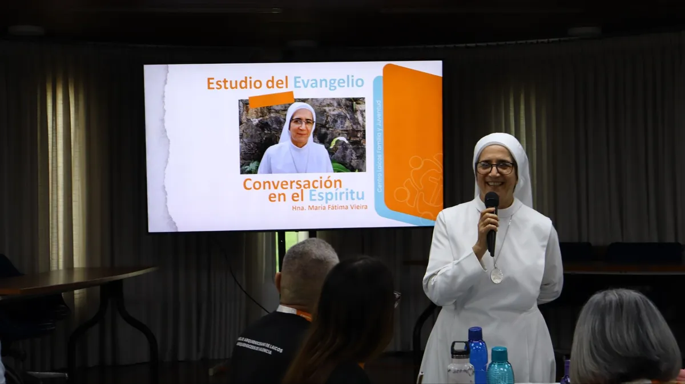
Encuentro Nacional de Laicos «Unidos en la Misión 2026», Casa Monseñor Ibarra, sede de la CEV, Montalbán, Caracas, del 13 al 15 de noviembre de 2026. Una religiosa ante una pantalla con el tema «Estudio del Evangelio, Conversación en el Espíritu». Crédito: CEV Medios, fuente: CEV. 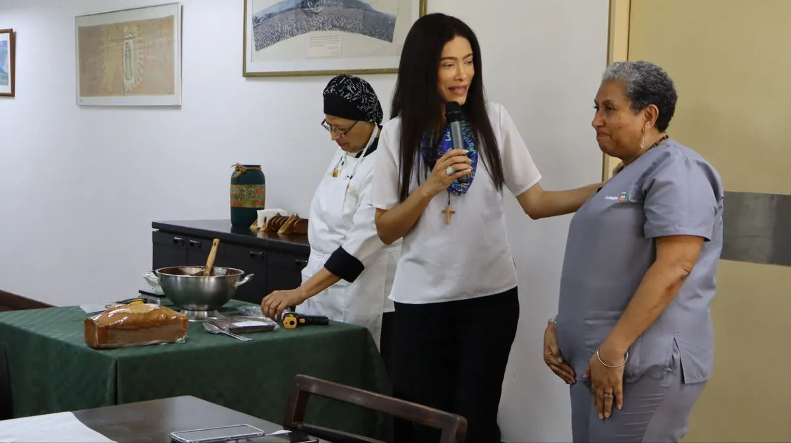
Encuentro Nacional de Laicos «Unidos en la Misión 2026», Casa Monseñor Ibarra, sede de la CEV, Montalbán, Caracas, del 13 al 15 de noviembre de 2026. Una facilitadora guía la actividad de chocolate junto a una mesa con ingredientes. Crédito: CEV Medios, fuente: CEV. 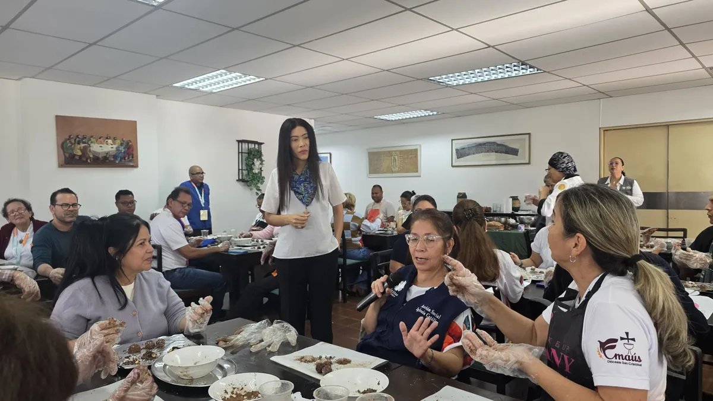
Encuentro Nacional de Laicos «Unidos en la Misión 2026», Casa Monseñor Ibarra, sede de la CEV, Montalbán, Caracas, del 13 al 15 de noviembre de 2026. Participantes elaboran chocolate en el comedor, con una facilitadora de pie. Crédito: CEV Medios, fuente: CEV. 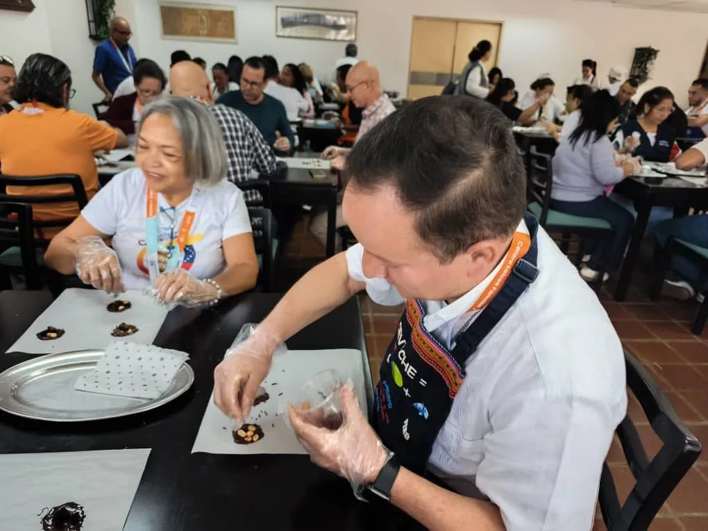
Encuentro Nacional de Laicos «Unidos en la Misión 2026», Casa Monseñor Ibarra, sede de la CEV, Montalbán, Caracas, del 13 al 15 de noviembre de 2026. Dos participantes preparan chocolate con cacao criollo en una mesa. Crédito: CEV Medios, fuente: CEV. 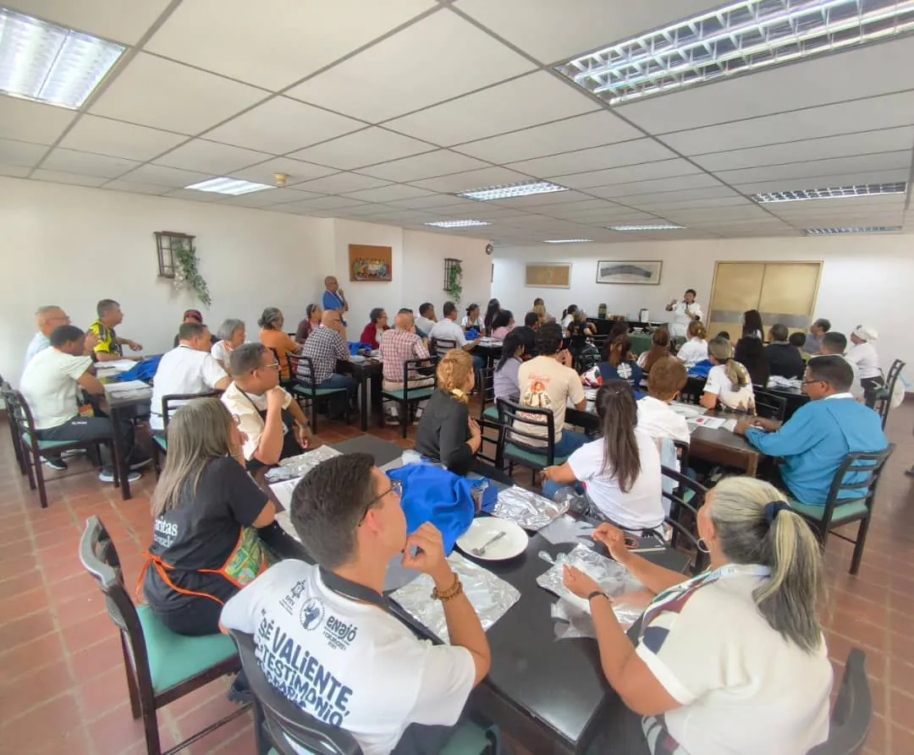
Encuentro Nacional de Laicos «Unidos en la Misión 2026», Casa Monseñor Ibarra, sede de la CEV, Montalbán, Caracas, del 13 al 15 de noviembre de 2026. Vista general del comedor durante el taller de chocolate. Crédito: CEV Medios, fuente: CEV. 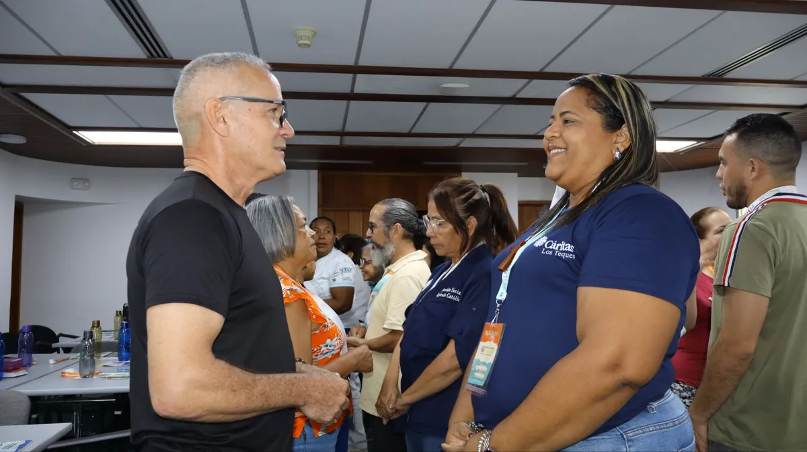
Encuentro Nacional de Laicos «Unidos en la Misión 2026», Casa Monseñor Ibarra, sede de la CEV, Montalbán, Caracas, del 13 al 15 de noviembre de 2026. Participantes conversan de pie, entre ellos una mujer con credencial del encuentro. Crédito: CEV Medios, fuente: CEV. 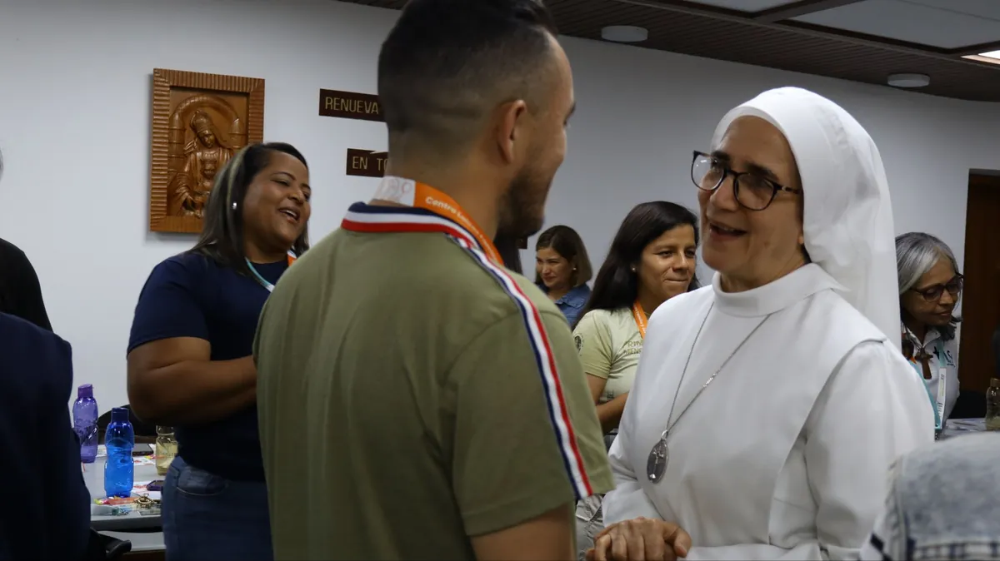
Encuentro Nacional de Laicos «Unidos en la Misión 2026», Casa Monseñor Ibarra, sede de la CEV, Montalbán, Caracas, del 13 al 15 de noviembre de 2026. Un participante conversa con una religiosa. Crédito: CEV Medios, fuente: CEV. 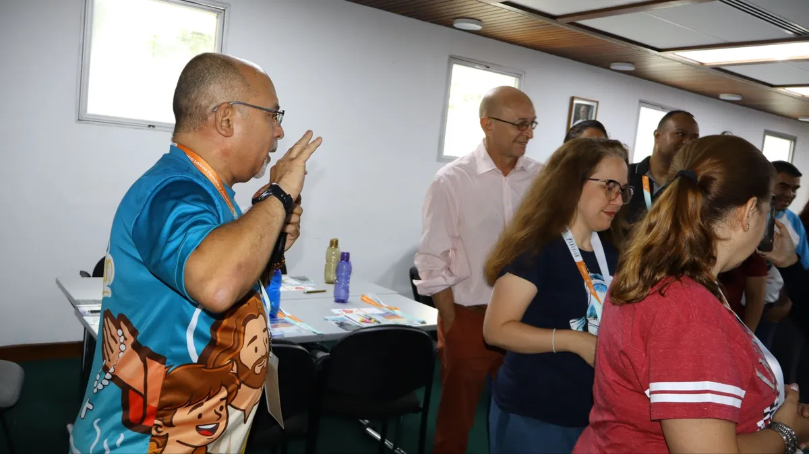
Encuentro Nacional de Laicos «Unidos en la Misión 2026», Casa Monseñor Ibarra, sede de la CEV, Montalbán, Caracas, del 13 al 15 de noviembre de 2026. Un participante gesticula mientras conversa con otros asistentes. Crédito: CEV Medios, fuente: CEV. 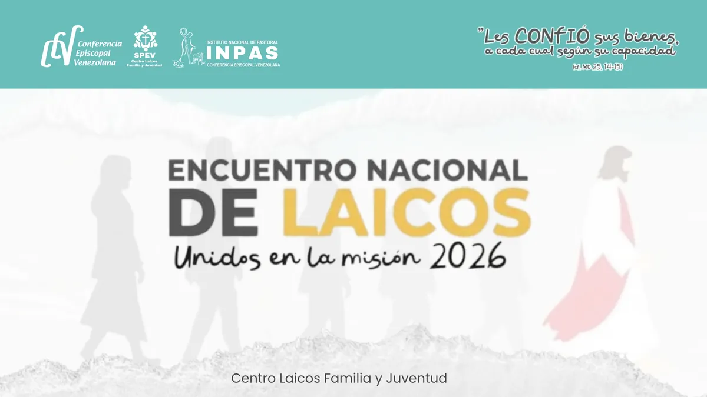
Encuentro Nacional de Laicos «Unidos en la Misión 2026», Casa Monseñor Ibarra, sede de la CEV, Montalbán, Caracas, del 13 al 15 de noviembre de 2026. Afiche del Encuentro Nacional de Laicos «Unidos en la misión 2026» del Centro de Laicos, Familia y Juventud e INPAS. Crédito: CEV Medios, fuente: Centro de Laicos, Familia y Juventud.